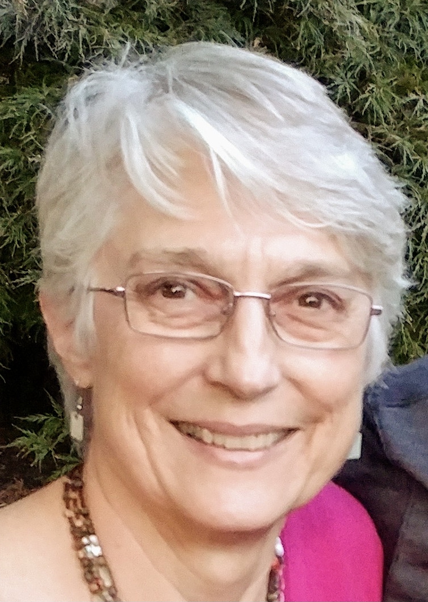

Zane Alcorn (Stage Director - The Gift of the Magi) is a Theater and Opera stage director who has worked across the country with highlights including Twelfth Night (Director; Theater At Monmouth), The Adventures of Pinocchio (Director; Boulder Opera Company), the world premiere of Benny & Joon (Assistant Director; The Old Globe), Kiss Me, Kate (Assistant Director; Central City Opera), THIRST & FOG (Director / Producer; Theaterlab NYC), Fire In Chains (Director / Producer; San Diego Fringe Festival), The Government Inspector (2nd AD; Red Bull Theater), the staging premiere of Paul McCartney’s Liverpool Oratorio (Stage Directing Intern; Cincinnati Opera), The Magic Flute (Assistant Stage Director; Opera Orlando) and many more. In addition he has over ten years of experience in Stage Management, Casting, Dramaturgy, and Producing. Zane was previously the Equity Assistant Stage Manager for Theater At Monmouth during their 2022 Season. Zane is an alumni of the San Diego State University BA Theater program.
zanealcorn.weebly.com

Ryan Colbert (Artistic Director) has been praised for “rendering text with a touching tenderness” (Berkshire Fine Arts) and making "a feast of quirky dramatic contrasts...while smoothing it with a velvety vocal line” (ArtsKnoxville). This season, she will sing Frasquita (Carmen) with Bella Diva Productions and again with the Orchestra Society of Philadelphia, cover Mother and the Witch (Hansel and Gretel) with Wilmington Concert Opera, Mother and Witch (Hansel und Gretel) with OOT Philadelphia, and Melisande (Pelleas et Melisande) with Amici Opera. Recent engagements include Nile in the world premiere of J Marchand Knight's "Cleopatra Built" and Tatyana cover (Eugene Onegin) with Opera Queens, Mimi (La boheme) and Nella (Gianni Schicchi) with Moon River Opera, Rosie in the world premiere of Frank Pesci's Royal Flush with Marble City Opera, and Alice Ford (Falstaff) with the International Summer Opera Festival of Morelia. She currently serves as Artistic Director of Delaware Valley Opera Company and Co-manager of Opera on Tap's Philadelphia chapter.
Mark Horwedel (Chorus Recruiter) has recruited the chorus for the past 3 years. He is performing his sixteenth season with DVOC, having done Land of Smiles, Gianni Schicchi, Elixir of Love, La Rondine, Merry Widow, Don Pasquale, Carmen, La Forza, Rigoletto, Aida, and Amahl and the Night Visitors, as well as several concerts with them in previous seasons. He has also performed with Opera Delaware, Center City Opera Company, and Concert Opera of Pennsylvania in repertoire including Romeo and Juliette, Daughter of the Regiment, Dido and Aeneas, and La Sonnambula. Mark’s Broadway-style credits include My Fair Lady, Once Upon a Mattress, South Pacific, Fiddler on the Roof, and Oliver! Mark is also active in Liturgical music, having served as the Bass section lead and a cantor in Saint David’s parish, and as the Tenor/Bass section lead in Joyful Song, a choir that does special event performances for the Archdiocese of Philadelphia..

Connie Koppe (Costume Designer) is pleased to add the new children’s opera Liebovar to the list of operas she has directed for The Delaware Valley Opera Company. Directing seemed to be a natural next step for singer and arts educator, Connie Koppe, who began directing for DVOC in 1997 with a production of The Merry Widow. Connie got her directing training from 14 years of watching professional directors while singing with the Opera Company of Philadelphia chorus and The Pennsylvania Opera Theater. For DVOC she has also directed Carmen, The Barber of Seville, The Marriage of Figaro, The Magic Flute, Cenerentola, Don Giovanni, Il Tabarro and Amahl and the Night Visitors. For several years, she was the Stage Director for the Philadelphia Christmas Revels and she directed a production of The Pirates of Penzance for the Philadelphia Biblical University’s opera workshop and Don Giovanni for Opera Libera. Connie holds a BS in Music Education and a Master of Music in Vocal Performance.

Josh Miller (Music Director - The Medium) A stage director noted for his "gorgeously constructed stage pictures," Josh Miller has served on the directing staff of The Glimmerglass Festival, Virginia Opera, Palm Beach Opera, The Fort Worth Opera Festival, Wolf Trap Opera Company, Opera San Antonio, Austin Opera and Austin Shakespeare. Miller's most recent directing credits include Strauss' "Ariadne auf Naxos" and Britten's "A Midsummer Night's Dream" with Chicago Summer Opera, Sondheim's "A Little Night Music" with the College Light Opera Company and Bernstein's "MASS" with the Austin Symphony, Ballet Austin and the Grammy-Winning Choral Ensemble, Conspirare.
Miller's production of Jake Heggie's "Three Decembers" was chosen as a winner of Opera America’s Robert L.B. Tobin Director-Designer Showcase. An avid promoter of new music, Miller produced the fully-staged world premiere of "Rose Made Man" by Franklin Piland and Tegan McLeod as a part of the Cohen New Works Festival. Miller is also a former recipient of the American Prize (the Charles Nelson Reilly Prize) in opera stage directing.
Dr. Miller is the Dean and on Faculty at the Academy of Vocal Arts in Philadelphia, PA.
Caroline Pashos (Chorus Coordinator) is thrilled to return for her fourth season with the Delaware Valley Opera Company. This season marks her debut as both an Assistant Director and a Stage Manager for the July production of Il matrimonio segreto. She also takes the stage as a member of the DVOC Chorus for the 2024 Summer Opera Festival in Le nozze di Figaro. Her DVOC debut occurred in 2019 as part of the chorus for their production of La rondine. Other performances include Carmen, The Merry Widow, Dialogues of the Carmelites, Les contes d’Hoffmann, Susannah, Cavalleria rusticana/I Pagliacci, and Amahl and the Night Visitors. She also appeared in the premieres of Liebovar and Take My Otherness. A native of suburban Philadelphia, she graduated in 2017 from Temple University with a Bachelor of Arts in Theatre. Her interests outside of theatre include astronomy, baseball, motorsport, nature, and soccer. She would like to thank her family for all their incredible support.
Ali Rohrbaugh (Production Manager) is a multi-media production manager and performer based in Philadelphia, with a focus on live performance, video marketing, and new work development. Previous credits include: Philly Children’s Theatre’s ‘Braving the River: A Sensory Play’ (Stage Manager), ‘Jump-Spin-Move! A Theatre For the Very Young Show,’ and ‘Season’s Magical Adventure,’ attending the Edinburgh Fringe Festival with The Los Angeles Theatre Initiative’s 2022 ‘Too Much Light…’ (Business & Marketing Director), Fish Project Play Festival and Red Door Play Festival (Festival Coordinator). Upcoming projects: ‘Light Year Away,’ with Philly Children's Theatre in collaboration with the Please Touch Museum, and returning to Edinburgh Fringe 2025 as a Lead Producer with the Los Angeles Theatre Initiative. Education: Muhlenberg College 2022, Theatre and Business Administration majors..
Kaitlyn Tierney (Director - Dido and Aeneas) Director Kaitlyn Tierney maintains an active musical career as a teacher, performer and director, and has maintained vocal studios at the University of Delaware, Rowan University, and Temple University as well as her own private studio in Philadelphia. Dr. Tierney has approached a wide variety of musical genres both as a director and performer.
Recent credits include assistant directing a production of Massenet’s Cendrillon with Cedar Rapids Opera in Iowa, and performing Alice Beineke in Andrew Lippa’s musical rendition of The Addams Family. Other directing credits include John Mclure's Laundry and Bourbon, Shakespeare's Measure for Measure, and Yazmina Reza's God of Carnage.
Dr. Tierney completed her Bachelor of Music at New England Conservatory, in a dual program of Vocal Performance and Music Theory, her Master of Music at the University of Delaware in and her Doctorate of Music at Temple University.
John Walthausen (Music Director - Dido and Aeneas)
Joe Krupa (Music Director - The Gift of the Magi) BA (Rutgers U); MMus (U of Calgary); teachers: Dalton Baldwin, Alex Fiorillo.